Arayüz Envanteri
Köy Simülasyonu
Ekran Föyü
Oyunun oyuncuya gösterdiği her yüzey — menüler, oyun içi katman, paneller, yönetişim defterleri, modallar ve geliştirici araçları — gerçek fontlar ve gerçek bileşenlerle, tek geçişte yakalandı. Plakaya dokun, tam ölçüde aç; ok tuşlarıyla gez.
Ekranlar
07 yüzeyOyunun kapıları — menü, kayıt, ayarlar, açılış sinematiği.
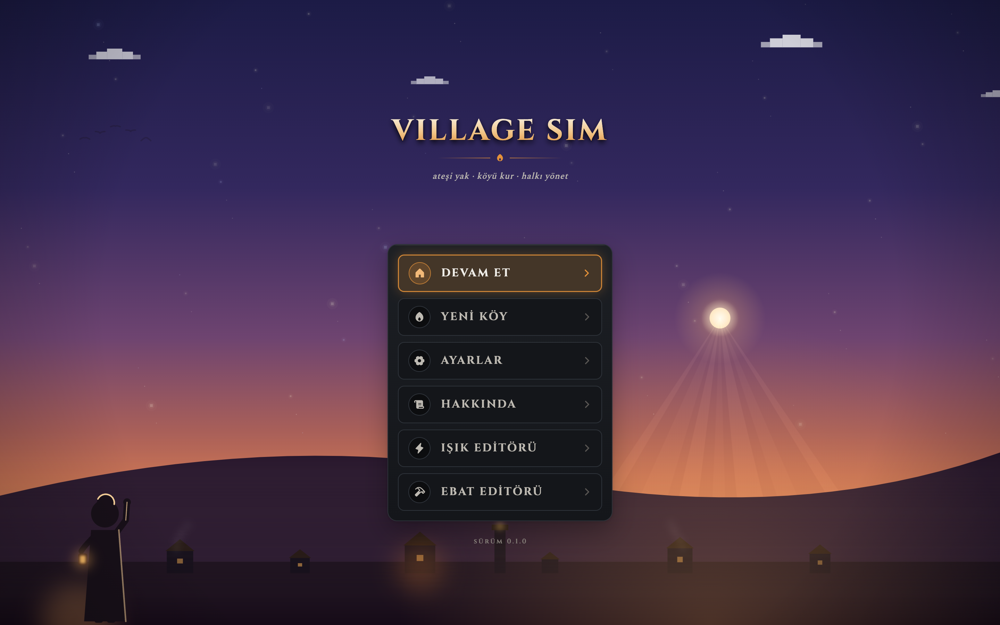
Ana Menü — Şafak Sahnesi
Akşamdan gün doğumuna geçen prosedürel sahne, fenerli karşılayıcı.
main_menu · 1440×900Kayıtlı Köyler
Menü sahnesi üstünde overlay pano; en son köye tek tıkla devam.
save_slots · 1440×900
Kayıtlı Köyler — Boş Durum
save_slots_empty · 1440×900Ayarlar
settings · 1100×800Hakkında
about · 1000×800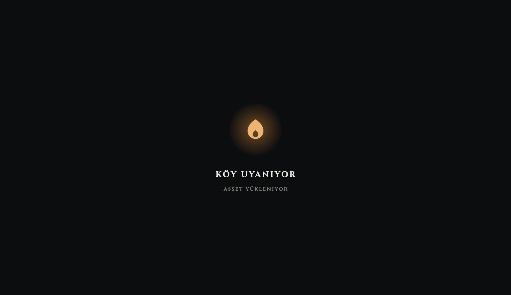
Yükleme Ekranı
loading · 900×520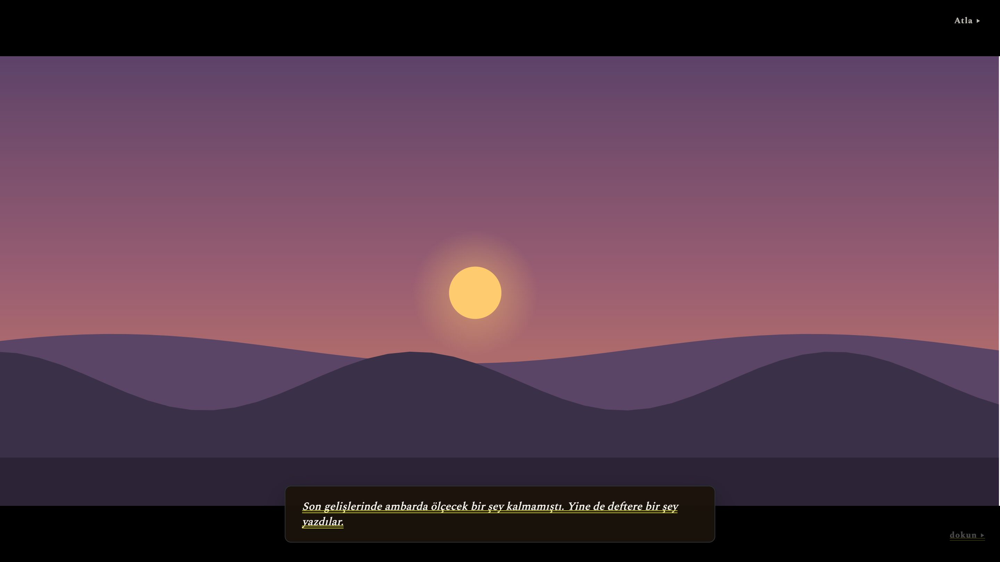
Açılış Sinematiği
İmparatorluğun vergi elinden kaçış — 2B sinematik oynatıcı.
cutscene_opening · 1440×810Oyun İçi HUD
06 yüzeyDünyanın üstünde duran katman: kaynak, inşa, görev, hane.
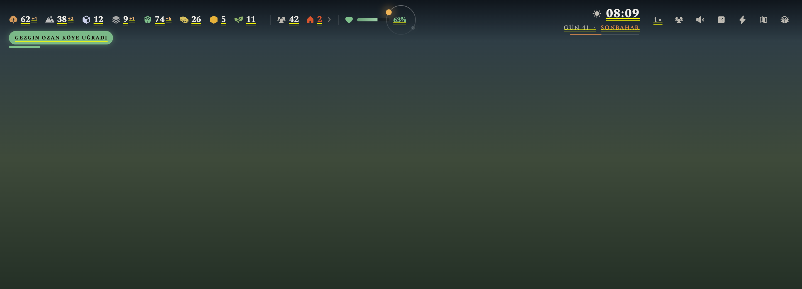
HUD — Kaynak / Zaman / Moral
Üst kaynak şeridi, mevsim-gün göstergesi, hız ve dev kısayolları.
hud · 1440×520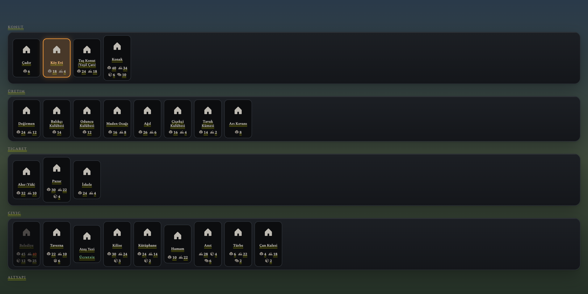
İnşa Paleti — Kategoriler
Alt çubuğun sekmeli hâli; kilitli zanaatlar soluk görünür.
build_panel · 1400×700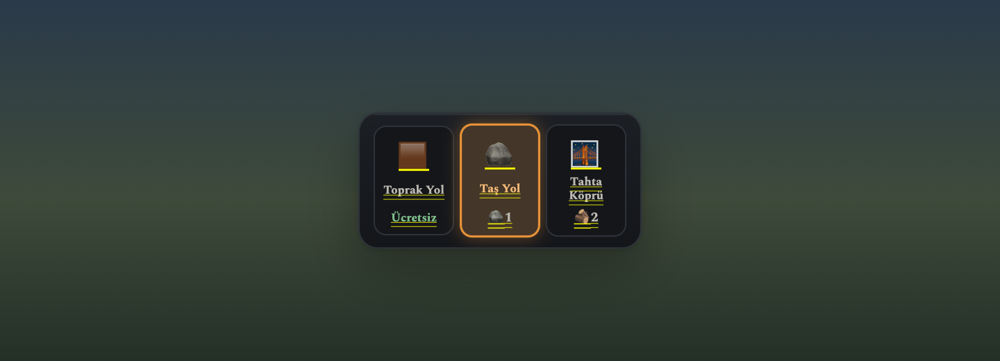
Yol Paleti
road_panel · 720×260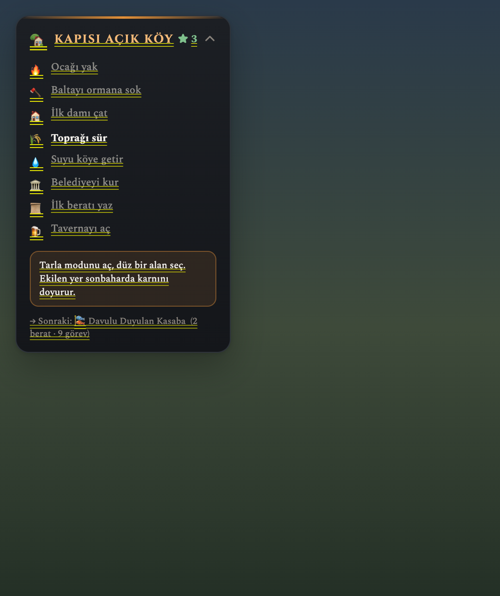
Tüzük / Görev Panosu
Kademe başlığı + açık görevler + sıradaki kademe.
objective_panel · 520×620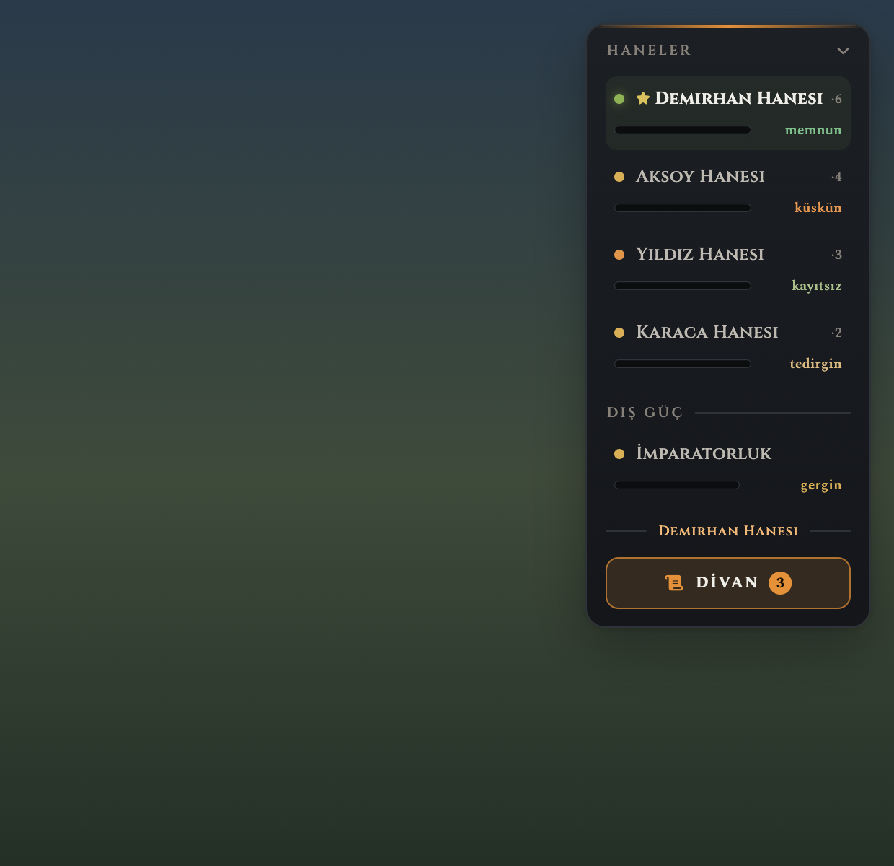
Hane Sancağı + İmparatorluk Madalyonu
Hanelerin hâli, yükselen hane ve imparatorluk yakınlığı.
house_banner · 620×600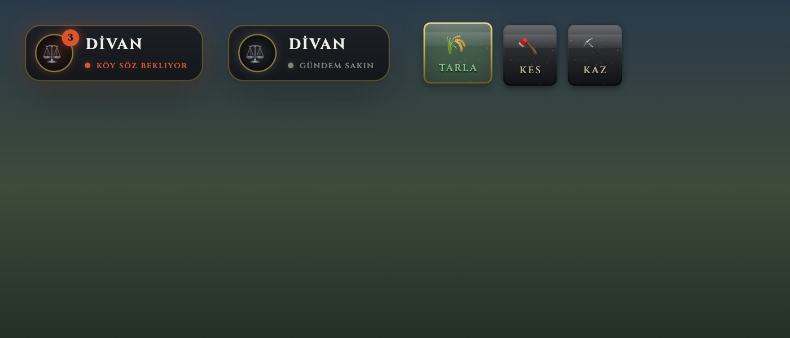
Divan Mührü + Mod Düğmeleri
Hep görünür yönetişim girişi ve dünya modu düğmeleri.
divan_seal · 700×300Paneller
08 yüzeyTıklayınca açılan derin yüzeyler — köylü, bina, nüfus defteri.

Köylü Paneli — Genel
villager_tab0 · 560×900
Köylü Paneli — Kişilik
villager_tab1 · 560×900
Köylü Paneli — Öykü
villager_tab2 · 560×900Nüfus Defteri — Köylüler
Tam ekran istatistik: sıralı köylü listesi ve hane grupları.
roster_tab0 · 1360×900
Nüfus Defteri — Haneler
Tam ekran istatistik: sıralı köylü listesi ve hane grupları.
roster_tab1 · 1360×900
Bina Paneli — Belediye
info_building_townhall · 560×900
Bina Paneli — Pazar
info_building_market · 560×900Bina Paneli — Ahşap Ev
info_building_house · 560×900Yönetişim
05 yüzeyDivan, Kanunname ve politik pusula: kararın verildiği yer.

Divan — Gündem
Her an açık yönetişim panosu: bekleyen ve mayalanan meseleler.
divan_tab0 · 1360×900Divan — Kanunname
Her an açık yönetişim panosu: bekleyen ve mayalanan meseleler.
divan_tab1 · 1360×900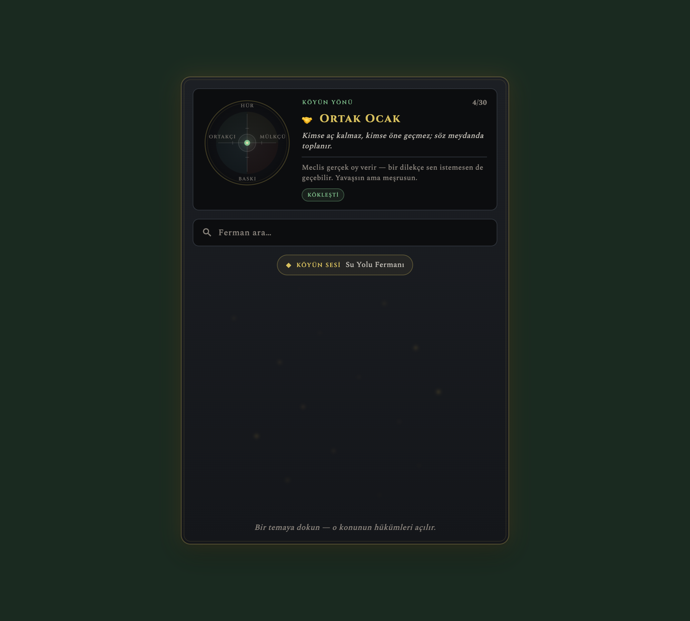
Kanunname — Altıgen Petek
Merkez göbek + 6 tema yaprağı; temaya dokununca hükümler açılır.
law_book · 1000×900Mühür Ritüeli
Ferman mühürlenirken zümreler masada; pusula ibresinin kayışı.
law_ritual · 920×780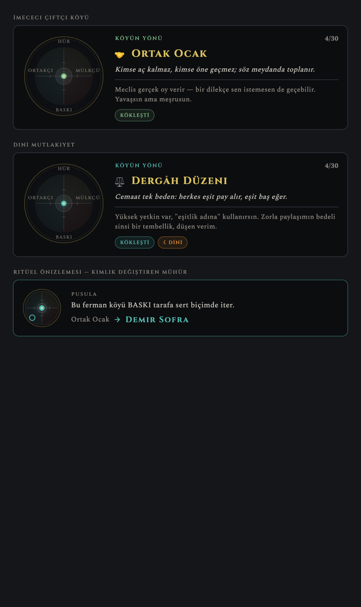
Politik Pusula
İki eksen / dört rejim; mühür öncesi "ibre nereye kayar" önizlemesi.
law_compass · 560×940Modallar
07 yüzeyOyunu bekleten anlar — dilekçe, olay kararı, imparatorluk.
Dilekçe Modalı 1
Birinci ağızdan metin + sahne kartı + karar seçenekleri.
petition_0 · 640×940
Dilekçe Modalı 2
Birinci ağızdan metin + sahne kartı + karar seçenekleri.
petition_1 · 640×940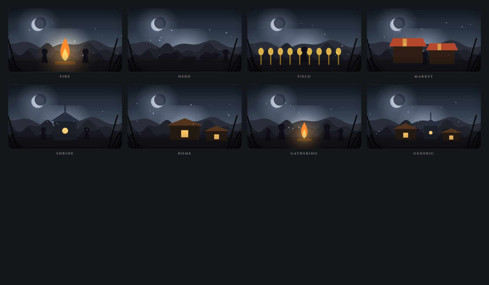
Dilekçe Sahne Kartları
Dilekçenin geçtiği yeri çizen prosedürel kart seti.
petition_scenes · 1200×700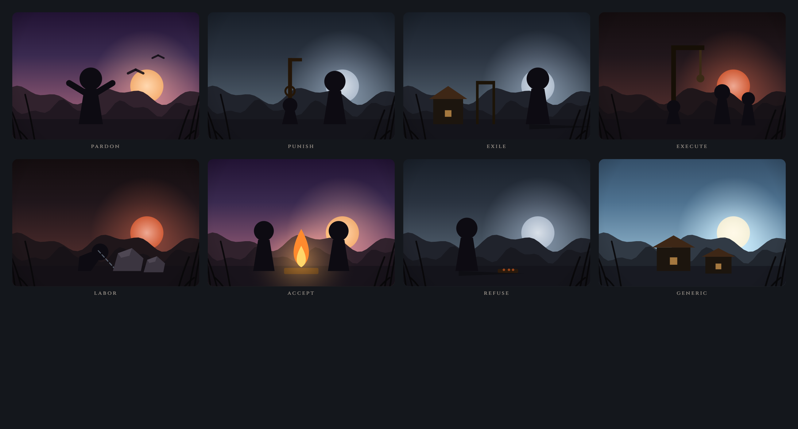
Karar-Eylem Sahneleri
Her karar seçeneğinin altındaki motif kartı (bağışla/sür/idam…).
option_scenes · 1300×700İmparatorluk Talebi
Pazarlık mini-oyunu: öde / pazarlık et / fidye / direniş.
imperial_modal · 820×940Olay Bandı
event_banner · 1000×240Olay Kararı Modalı
event_choice · 760×640Geliştirici
02 yüzeyYalnız dev yapılarında görünen test yüzeyleri.
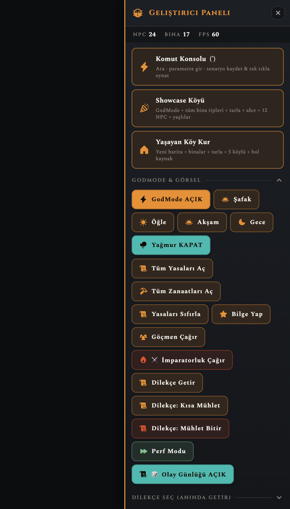
Geliştirici Paneli
God mode, saat/hava, senaryolar, olay tetikleyiciler, sim hızı.
dev_panel · 560×980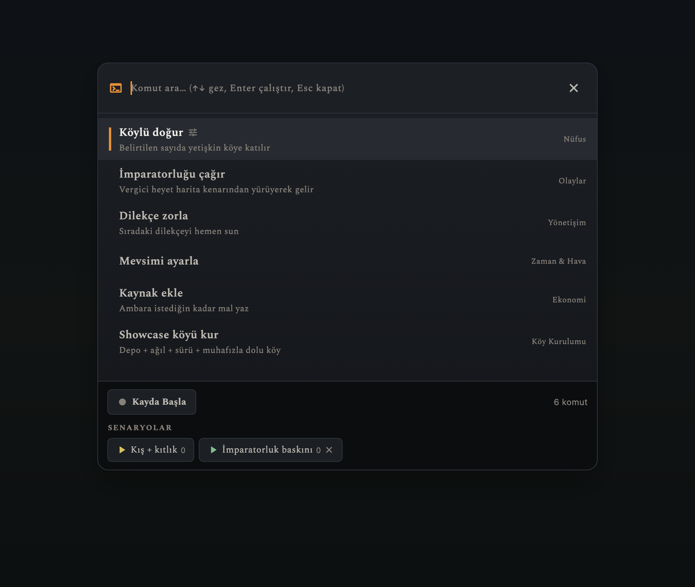
Dev Konsolu (`)
Quake-style komut arama + parametre formu + senaryo kayıt/oynat.
dev_console · 900×760Tasarım Sistemi
02 yüzeyBütün yüzeylerin beslendiği ortak parçalar.
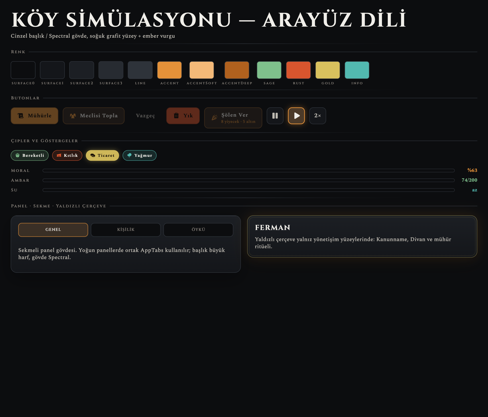
Tasarım Sistemi — app_ui Bileşenleri
Panel, buton türleri, çip, istatistik çubuğu, sekme, yaldızlı çerçeve.
design_system · 1100×940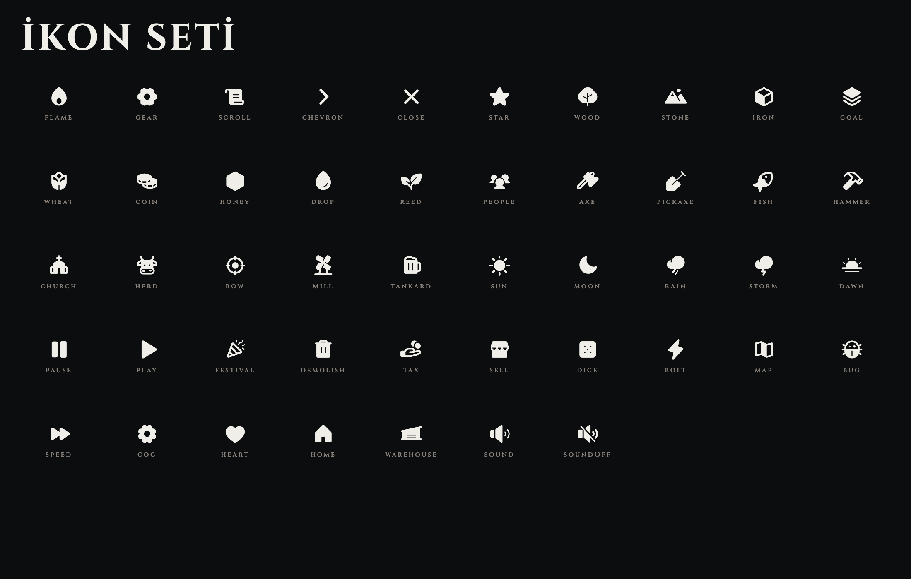
İkon Seti — GameIconData
Vektörel HUD ikonlarının tamamı.
icons · 1100×700